Comparación A/B · issue #89
Mismo contenido, misma paleta, dos lenguajes: izquierda el sitio en
producción (build de este commit, servido local); derecha el prototipo
con tipografía sans/mono, HUD, bordes finos y tarjetas del
Laboratorio temporal.
Capturas: Chrome headless, prefers-reduced-motion para saltar la intro de ~16 s,
caché deshabilitado, una sola corrida por viewport.
El switch es CSS puro (radios + selectores hermanos), sin JS.
642 KB · 32 req · 158 KB de fuentes → 26 KB · 3 req · 0 fuentes
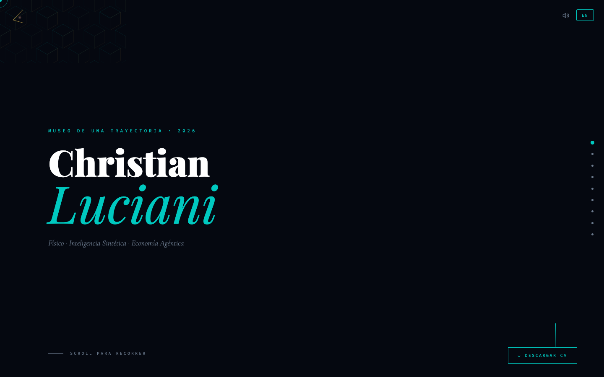
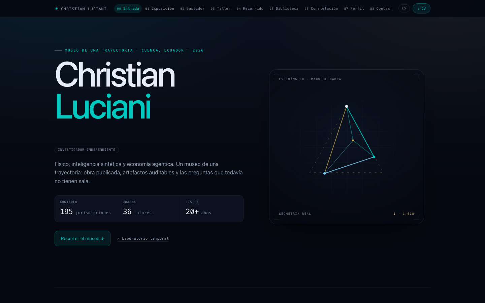
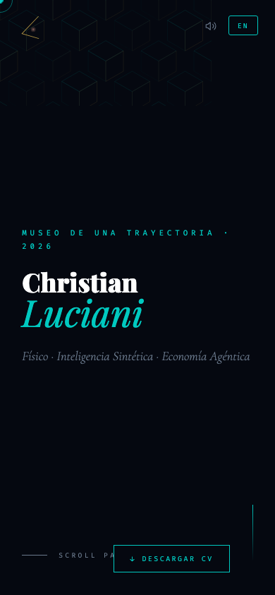
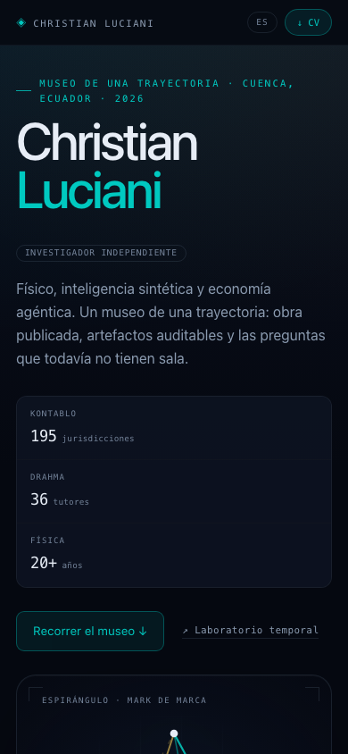
tarjetas con barra de acento → grilla + chips + meta mono
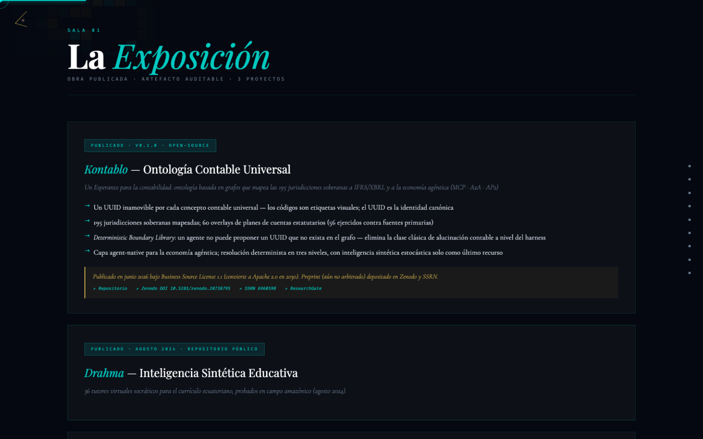
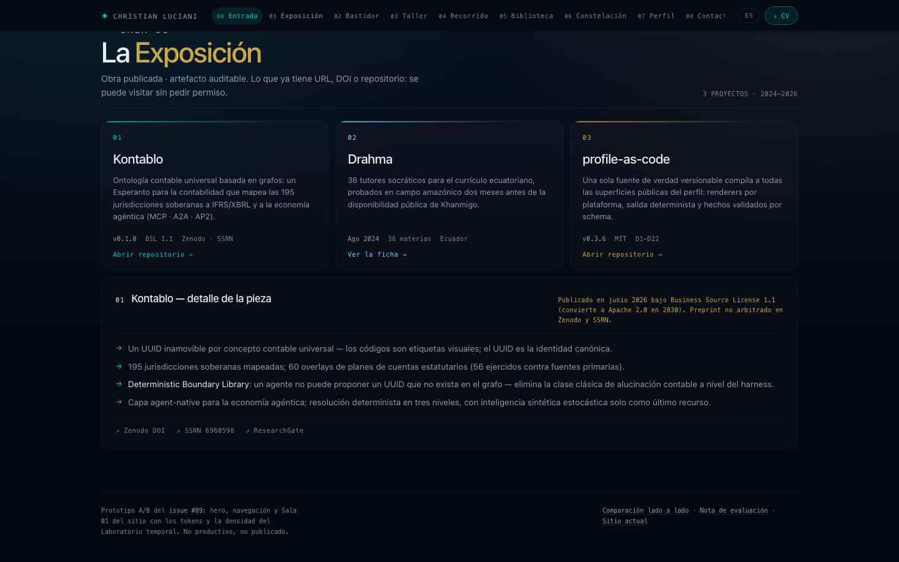
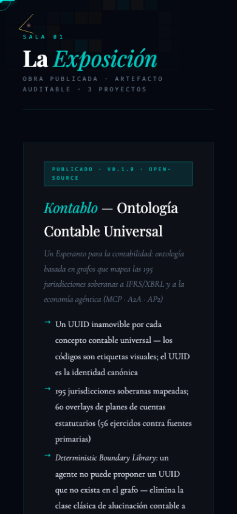
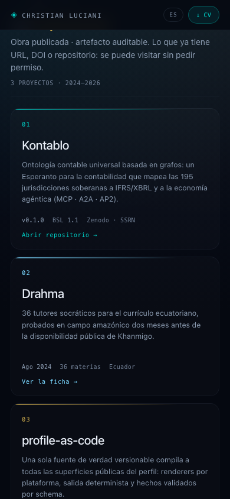
canvas de fondo corregido SOLO en el navegador de captura
Los canvas de fondo del sitio (#hero-canvas, .room-canvas)
se pintan en 300×150 px porque son elementos reemplazados con
inset:0 y width:auto (toman su tamaño intrínseco).
Las capturas de arriba son el sitio tal como está hoy. Estas otras
aplican width:100%;height:100% en el navegador de captura para
que el A/B no compare contra una portada degradada. No es un cambio al repo.
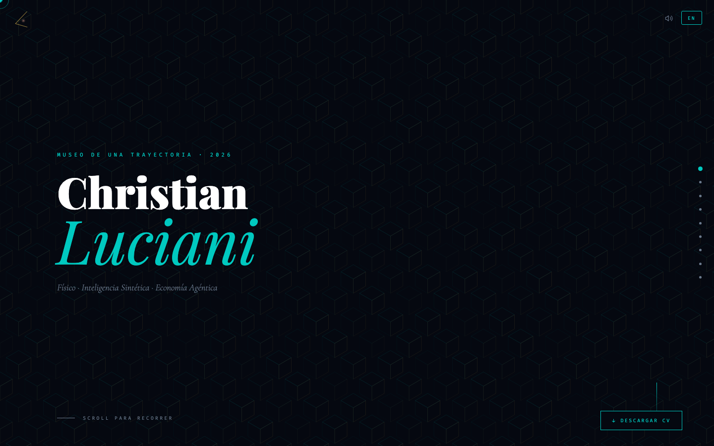
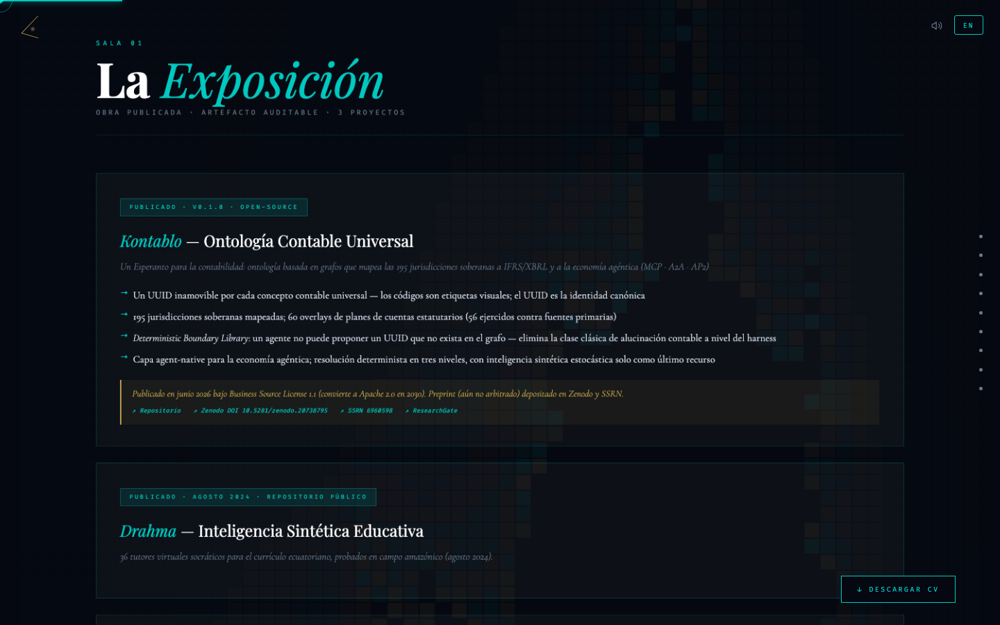
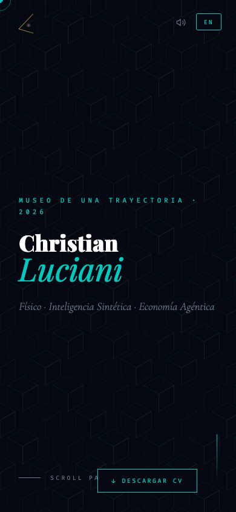
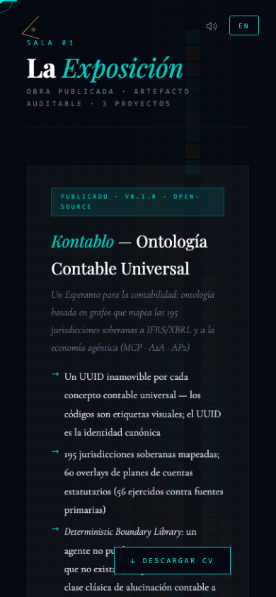